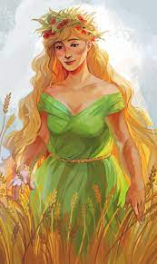

Demeter
Divinité du feu sacre, et du foyer
-
Nom romain : Cérès
Etymologie : « Terre Mère»
Père : Cronos
Mère : Rhéa
-
Déméter est une belle déesse blonde "comme les blés": par un hasard, puisque Cérès fait pousser... les céréales! Elle est très
appréciée des hommes, à qui elle a apporté l'agricuture, mais sa fille unique Persephone, lui cause bien des soucis...
-
-
Un jour que la fille de Déméter, la jolie Perséphone, était en train de cueillir des narcisses sur une prairie de Sicile,
un gouffre s'ouvrit et le roi des Enfers, Hadès, surgit sur un char tiré par des chevaux noirs comme la nuit. Hadès emporta
Perséphone au pays des ombres pour l'épouser. Désespérée, Déméter fouilla la terre entière durant 9 jours et 9 nuits comme
folle, tenant un flambeau dans chaque main, elle demandait à tous ceux qu'elle croisait s’ils avaient vu sa fille.
-
Déméter, cherchant obstinément sa fille, ressemblait maintenant à une vieille mendiante. Elle entra un jour dans la cité
d’Eleusis et demanda l’hospitalité : comme le roi l’accueillit avec une grande bonté, elle lui offrit, pour le remercier,
la blé et initia ses fils aux secrets de la maîtrise de l’agriculture. Chaque année, à Eleusis, une cérémonie célébrait
ces « mystères » pendant 9 jours et 9 nuits, on sacrifiait à la déesse des porcs, son animal sacré
-
Apprenant qu’ Hadès détenait sa fille, Déméter se laisse mourir et toute la végétation avec elle, plongeant les hommes
dans l’hiver et dans la famine. Zeus , devant la catastrophe, céda et ordonna à son frère le retour de Perséphone. Mais,
malin, Hadès avait donné à la jeune fille six petits grains de grenade ; or quiconque goûtait de la nourriture des
Enfers ne pouvait plus en sortir. Finalement, Zeus Zeus trancha ; Perséphone passerait 6 mois avec Hadès . Cela explique
les saisons : sans sa fille 6 mois par an, Déméter laisse revenir l‘hiver…